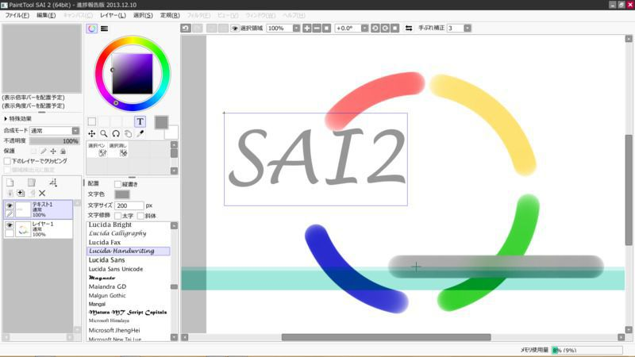

2013-12-10
SAI2の進捗報告版が公開

先日、WindowsでPhotoshopとIllustratorを安く抑えるという記事でSAIを紹介しましたが、SAI2の進捗報告版が公開されたようです。
64ビット、マルチコアに対応し、定規ツール、文字ツールなどが新たに追加されたほか、様々な変更点があるようです。
ダウンロードページ
SYSTEMAX Software Development - ペイントツールSAI 開発室 http://www.systemax.jp/ja/sai/devdept.html
スクリーンショット
スクリーンショットはクリックで拡大できます。
- SAI v1 の初期画面
以下SAI v2のスクリーンショットです。
初期画面
円定規
円定規で描画

定規は動かせる
直線定規
文字ツールを使用してみたところ（後から変更も可能）
文字選択画面はプレビュー表示される
３点透視ツール（パースツール）を使ってみたところ
機能一覧（公式発表）
全体
- 64bit版を用意
- マルチコア対応による高速化
- Unicodeアプリ化 (今更ですが)
ブラシ関連
- アンチエイリアスの品質向上 (ブラシのパネルの[その他]→[輪郭の硬さ]で調整できます)
- 平坦ブラシ(ブラシ波形の右端)で濃度が低い時の円の連鎖模様を低減
- ブラシサイズの上限を5000に変更
- 水彩筆を大幅に高速化
- 筆圧に対して濃度の変化がリニアになるよう変更 (ブラシのパネルの[その他]→筆圧感度[濃度]を190程度にすると感触がVer.1に近くなります)
- ストロークの入り抜きの感触を調整 (筆ペンから鉛筆に変わったような感じです)
- にじみ、テクスチャのリサイズを実装 (いずれちゃんとプレビューも実装する予定です)
レイヤー関連
- 複数レイヤーに対する一括操作に対応 (順序変更、削除、パラメータ変更、領域選択移動、など)
- 水彩境界や用紙質感の色が濁りにくいよう調整
- 保護機能の追加 (編集、移動、全体)
新しい機能
- 定規 (まだ直線と円のみ／操作系は暫定／メニューで表示します)
- パース定規 (１～３点透視図法／操作系は暫定／レイヤーパネルに作成ボタンがあります)
- 文字ツール (機能と操作系は暫定／位置揃え、縦中横、混在書体、ふりがななどの実装を予定しています)
ペンタブレット関連
- WinTabの制御方法を簡略化 (できること(例えば精密なマウスモードなど)は減りますが安定度が向上するはずです)
- TabletPC APIに対応 (現状はWinTabドライバがインストールされていない場合のみ有効になります)
現在分かっている問題点- 懸念など
- 大径ブラシを使うとヒストリデータのディスクへの追い出しのために頻繁にフリーズする場合がある (改善できると思います)
- 高DPI環境への対応が中途半端 (レイアウトは調整されますが画像部品がリサイズされません。また、Per-Monitor DPIにも対応していません。これらは対応する予定です)
- 低電圧版CPUを搭載した一部のノートPCなどではマルチコア処理の高負荷が続くとクロックダウンされて速度が半分近くまで遅くなる
- １つでも負荷のかかったCPUがあるとそれに引っ張られて全ての処理速度が低下する (ハイパースレッディングありのCPUではSMTペアの一方だけを使うようにしてる(つもり)のでそのような状況は避けられると思います)
備考
- 現状ではレジストリは一切使用していません。
- ヒストリデータはマイドキュメントの中の"SYSTEMAX Software Development\SAI2 Demo\hisdata"に作成されます。
- 該当ドライブのディスクの空き容量の目安は、キャンバスサイズ 10000x10000 なら少なくとも100GB程度、といった具合です。

デジ絵を簡単マスター ペイントツールSAI スーパーテクニック
posted with amazlet at 14.01.17
おにねこ 茨乃 サイドランチ(七輝 翼) サイドランチ(citron) サイドランチ(望月 わらび) サイドランチ(楊 尚樹) サイドランチ(卯月) サイドランチ(岩元 健一)
ソーテック社
売り上げランキング: 52,695
ソーテック社
売り上げランキング: 52,695
comments powered by Disqus


{kind=link}
{kind=link}
{kind=link}
{kind=link}
{kind=link}
{kind=link}
{kind=link}
{kind=link}